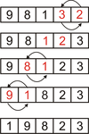

|
Массив используется для хранения последовательности однотипных данных и выполнения над этой последовательностью операций. Типовые операции над массивами:
- поиск в массиве;
- вычисление суммы, количества и произведения определенных элементов массива;
- сортировка массива;
- удаление определенных элементов из массива;
- добавление элементов в массив;
- формирование массива.
К низу страницы
Пример(2) программы подсчета отрицательных чисел в массиве из n (n<=100) вещественных чисел:
#include <iostream.h>
#include <conio.h>
void main ()
{
float a[100]; //массив
int n, i; //количество элементов и индекс элемента
int k; //количество отрицательных чисел
cout<<”n? “;
cin>>n
cout<<”a? “;
//Ввод массива
for (i=0; i<n; i++)
cin>>a[I];
k=0;
for (i=0; i
if (a[i]<0
k++;
cout<<”k=”<<k;
getch();
}
К началу раздела
Пример(3) программы сортировки массива из n вещественных чисел (n<=100) по возрастанию методом прямого обмена (пузырьковым методом):
Схема метода для массива из 5 элементов(первый прогон):

#include <iostream.h>
#include <conio.h>
void main ()
{
int a[100]; //массив
int n, i; //количество элементов и индекс элемента
int k; //номер прохода массива при сортировке
cout<<”n? “;
cin>>n
cout<<”a? “;
//Ввод массива
for (i=0; i<n; i++)
cin>>a[I];
//Сортировка пузырьковым методом
for (k=1; k<n; k++)
for (i=0; i<k-1; i++)
if (a[i]>a[i+1])
{int t; t=a[i]; a[i]=a[i+1]; a[i+1]=t;} //перестановка элементов
cout<<”a:”<<endl;
for (i=0; i<n; i++) //цикл вывода массива на экран
cout<<a[i]<<’ ‘;
getch();
}
К началу раздела
Пример(4) программы удаления из массива, содержащего n целых чисел, последнего отрицательного элемента:
#include <iostream.h>
#include <conio.h>
void main ()
{
float a[100]; //массив
int n, i, j; //количество элементов и индексы элемента
cout<<”n? “;
cin>>n
cout<<”a? “;
//Ввод массива
for (i=0; i<n; i++)
cin>>a[I];
i=n-1; //начальное значение индекса для поиска с конца
while (i>=0 && a[i]>=0) //цикл поиска отрицательного числа
i--;
if (i>=0) //число найдено, номер числа i
{
for (j=i; j<n-1; j++) //удаление a[i], сжатие массива
a[j]=a[j+1];
n--; //количество элементов будет на 1 меньше
}
for (i=0; i<n; i++) //вывод массива
cout<<a[I]<<’ ‘;
getch();
}
Тесты:
n=5, a: 1 –2 –3 5 6 результат: a: 1 –2 5 6, n=4
n=5, a: -1 –2 –3 –4 -6 результат: a: -1 –2 –3 –4, n=4
n=5, a: 1 2 3 4 5 результат: a: 1 2 3 4 5, n=5
К началу раздела
Пример(5) программы формировния нового массива из отрицательных чисел целочисленного массива размера n (n<=100):
#include <iostream.h>
#include <conio.h>
void main ()
{
int a[100], b[100]; //исходный и формируемый массивы
int n, i, j; //количество элементов в массиве и индекcы элементов
cout<<”n? “; cin>>n;
cout<<”a? “;
for (i=0; i<n; i++) //цикл ввода массива
cin>>a[i];
j=0; //индекс первого элемента в формируемом массиве
for (i=0; i<n; i++) //цикл поиска a[i]<0 и запись их в массив
if (a[i]<0)
{ b[j]=a[I]; j++;}
if (j==0) //новый массив пуст
cout<<”b is empty”;
{
cout<<”b:”;
for (i=0; i<j; i++)
cout<<b[i]<<’ ‘;
}
getch();
}
Тесты:
n=5, a: 1 -2 3 -4 -5 результат b: -2 -3 -5
n=5, a: -1 -2 -3 -4 -5 результат b: -1 -2 -3 -4 -5
n=5, a: 1 2 3 4 5 результат : b is empty
К началу раздела
|